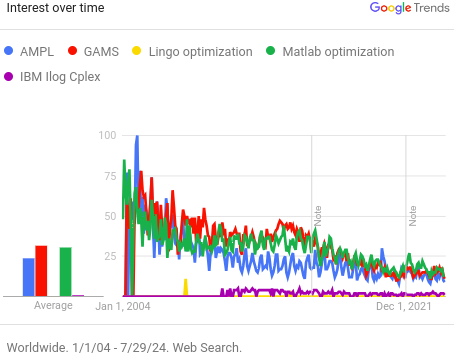
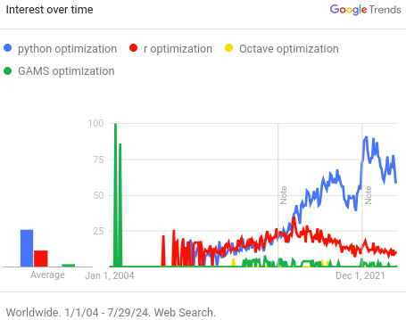
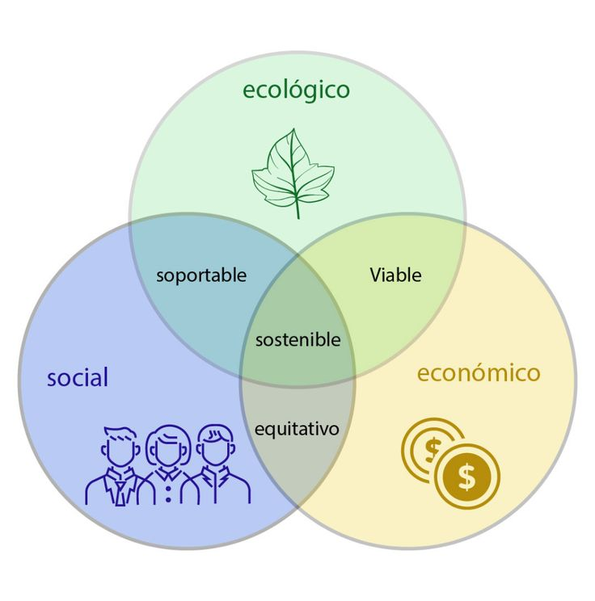
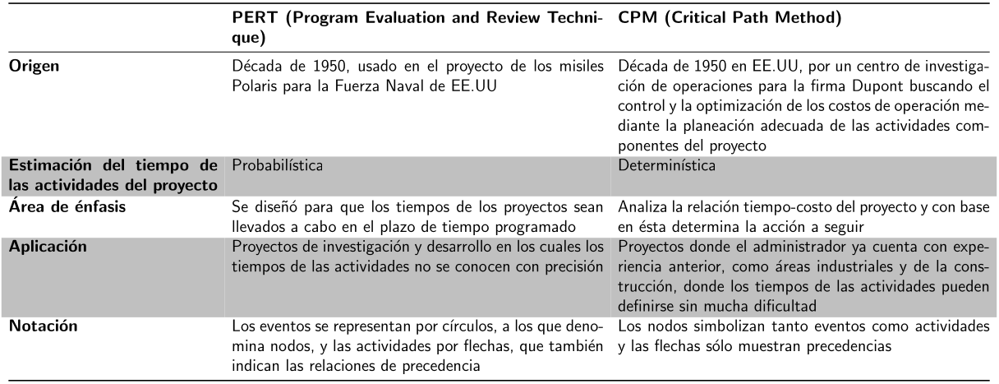
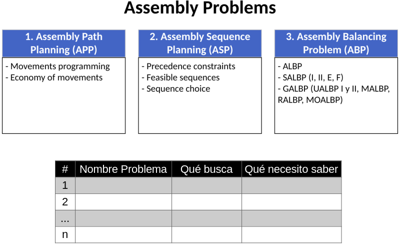

![]()
| Materia prima | Costo $/kg | Azúcares % | Grasas % | Proteínas % | Inertes % |
|---|---|---|---|---|---|
| A | 2.35 | 12 | 10 | 60 | 18 |
| B | 2 | 10 | 10 | 50 | 30 |
| C | 1.7 | 8 | 6 | 44 | 42 |
II8A3 - Producción I

Introducción
¿Para qué sirve este curso?
- Diseñar, programar y controlar la producción de bienes.
- Determinar y analizar variables de operación que aporten a la formulación de planes de mejoramiento para el uso de los recursos empresariales.
- Proponer sistemas de información y reporte que faciliten y mejoren el análisis de la operación.
Contenido
Contenido
Contenido
Evaluación
Módulo I (30%)
- Parcial (25%)
- Actividades en clase (5%)
Módulo II (20%)
- Parcial (15%)
- Actividades en clase (5%)
Módulo III (20%)
- Parcial (15%)
- Actividades en clase (5%)
Actividades Complementarias e integradoras (30%)
- Lectura (5%)
- Dashboard OEE (15%)
- Taller de optimización en AMPL (10%)
Recursos guía
- Chapman (2006). Planificación y Control de la Producción.
- Curry y Feldman (2011). Manufacturing Systems Modelling and Analysis (2nd ed.).
- Muñoz y Zapata (2023). Introducción a la manufactura de clase mundial.
- Nahmias (2015). Production and Operations Analysis (7th ed.).
- Pinedo (2012). Scheduling: Theory, Algorithms and Systems (4th ed.).
Software


Qlik Sense
Presentación
Repaso de Investigación de Operaciones
¿Qué es la investigación de operaciones?
La investigación de operaciones es la rama de las matemáticas que aporta herramientas para la toma de decisiones, específicamente problemas de asignación de recursos escasos. Esto a su vez, buscando la eficiencia y eficacia en el uso de dichos recursos.
Metodología para abordar problemas

Un ejemplo básico…
Un expendio naturista prepara sus alimentos y los vende al público basándose en tres materias primas, cuyos contenidos se presentan enseguida:
¿Cuánto deberían mezclar de cada una de las tres si se desea minimizar el costo para preparar 1kg de alimento, cuyo contenido de azúcar no sea menor a 10%, su contenido de grasa no mayor a 9.5% y su contenido de proteínas no menor de 52%?
Notación expandida
\(\begin{align*} \text{min } Z(X) &= 2.35X_{A} + 2X_{B} + 1.7X_{C} \\ \\ \text{s.a:} \\ 0.12X_{A} + 0.10X_{B} + 0.08X_{C} &\geq 0.1 ~\text{(Contenido de azúcar)} \\ 0.1X_{A} + 0.1X_{B} + 0.06X_{C} &\leq 0.095 ~\text{(Contenido de grasa)} \\ 0.6X_{A} + 0.5X_{B} + 0.44X_{C} &\geq 0.52 ~\text{(Contenido de proteínas)} \\ X_{A} + X_{B} + X_{C} &= 1 ~\text{(Cantidad requerida)} \\ X_{A}, X_{B}, X_{C} &\geq 0 ~\text{(No negatividad)} \\ \\ \text{Donde:} \\ X_{A} &= \text{Cantidad a usar de la materia prima A} \\ X_{B} &= \text{Cantidad a usar de la materia prima B} \\ X_{C} &= \text{Cantidad a usar de la materia prima C} \end{align*}\)
Notación compacta
\(\begin{align*} \text{min } Z(X) &= \sum_{i \in N} Costo_{i} \ast X_{i} \\ \\ \text{s.a:} \\ \sum_{i \in N}{} Azucar_{i} \ast X_{i} &\geq minimo_{Azucar} ~\text{(Contenido de azúcar)} \\ \sum_{i \in N}{} Grasa_{i} \ast X_{i} &\leq maximo_{Grasa} ~\text{(Contenido de grasa)} \\ \sum_{i \in N}{} Proteinas_{i} \ast X_{i} &\geq minimo_{Proteinas} ~\text{(Contenido de proteínas)} \\ \sum_{i \in N}{} X_{i} &= 1 ~\text{(Cantidad requerida)} \\ X_{i} &\geq 0 ~\text{(No negatividad)} \\ \\ \text{Donde:} \\ X_{i} &= \text{Cantidad a usar de la materia prima i} \\ N &= \{A, B, C\} \end{align*}\)
Software de optimización


Software de optimización


Elementos de AMPL
- Conjuntos
- Parámetros
- Variables
- Función objetivo
- Restricciones
- Datos
- Parámetros del solver
Esquema del archivo mod - Notación expandida
Archivo mod - Notación expandida
reset; # Elimina las variables, parametros y soluciones previas
model; # Indica el inicio del modelo
# Variables
var X_A >=0; # Cantidad de la materia prima A
var X_B >=0; # Cantidad de la materia prima B
var X_C >=0; # Cantidad de la materia prima C
# Funcion objetivo
minimize Z: 2.35*X_A + 2*X_B + 1.7*X_C;
# Restricciones
s.t. Contenido_Azucar:
0.12*X_A + 0.1*X_B + 0.08*X_C >= 0.1;
s.t. Contenido_Grasa:
0.1*X_A + 0.1*X_B + 0.06*X_C <= 0.095;
s.t. Contenido_Proteinas:
0.6*X_A + 0.5*X_B + 0.44*X_C >= 0.52;
s.t. Cantidad_Requerida:
X_A + X_B + X_C = 1;
# Opciones del solver
option solver highs;
solve;
display Z, X_A, X_B, X_C;Esquema del archivo mod - Notación compacta
Archivo mod - Notación compacta
reset; # Elimina las variables, parametros y soluciones previas
model; # Indica el inicio del modelo
# Conjuntos
set N; # Conjunto de materias primas
# Parametros
param Costo{N} >=0; # Costo de cada materia prima
param Azucar{N} >=0; # Aporte de azucar de cada mp
param minimo_azucar >=0;
param Grasa{N} >=0; # Aporte de grasa de cada mp
param maximo_grasa >=0;
param Proteinas{N} >=0; # Aporte de proteinas de cada mp
param minimo_proteinas >=0;
# Variables
var X{N} >=0; # Cantidad a usar de cada materia prima
# Funcion objetivo
maximize Z:
sum{i in N} Costo[i]*X[i];
# Restricciones
s.t. Contenido_Azucar:
sum{i in N} Azucar[i]*X[i] >= minimo_azucar;
s.t. Contenido_Grasa:
sum{i in N} Grasa[i]*X[i] <= maximo_grasa;
s.t. Contenido_Proteinas:
sum{i in N} Proteinas[i]*X[i] >= minimo_proteinas;
s.t. Cantidad_Requerida:
sum{i in N} X[i] = 1;
# Datos
data AMPL_ejemplo1.dat; # Indica de dónde extraer los datos
# Opciones del solver
option solver highs;
expand; # Expande el modelo, sirve para validar
solve;
display Z, X;Archivo dat - Notación compacta
Archivo dat (Alternativa) - Notación compacta
Solución
Notación expandida 
Notación compacta
Un ejemplo un poco más complejo…
En preparación para la temporada invernal, una compañía fabricante de ropa está manufacturando abrigos de piel con capucha y chamarras con relleno de plumas de ganso, pantalones con aislamiento y guantes. Todos los productos se elaboran en cuatro departamentos diferentes: corte, aislamiento, costura y empaque.
La compañía recibió pedidos en firme de sus productos, el contrato estipula una penalización por los artículos no surtidos. Elabore un plan de producción óptimo para la compañía, con base en los siguientes datos:
Tiempo requerido por área (hr)
|
|||||
|---|---|---|---|---|---|
| Departamento | Abrigos | Chamarras | Pantalones | Guantes | Capacidad (hr) |
| Corte | 0.3 | 0.3 | 0.25 | 0.15 | 1000 |
| Aislamiento | 0.25 | 0.35 | 0.3 | 0.1 | 500 |
| Costura | 0.45 | 0.5 | 0.4 | 0.22 | 302 |
| Empaque | 0.15 | 0.15 | 0.1 | 0.05 | 700 |
| Demanda | 800 | 750 | 600 | 500 | - |
| Utilidad ($/uni) | 30 | 40 | 20 | 10 | - |
| Penalización por unidad ($/uni) | 15 | 20 | 10 | 8 | - |
¿Cuántas unidades se deben producir de cada producto para maximizar la utilidad?
Notación expandida
\(\begin{align*} \text{max } Z(X) &= 30X_{1} + 40X_{2} + 20X_{3} + 10X_{4} \\ &\text{...} - 15\max\{800-X_{1},0\} \\ &\text{...} - 20\max\{750-X_{2},0\} \\ &\text{...} - 10\max\{600-X_{3},0\} \\ &\text{...} - 8\max\{500-X_{4},0\} \\ \text{s.a:} \\ 0.3X_{1} + 0.3X_{2} + 0.25X_{3} + 0.15X_{4} &\leq 1000 ~\text{(Corte)} \\ 0.25X_{1} + 0.35X_{2} + 0.3X_{3} + 0.1X_{4} &\leq 500 ~\text{(Aislamiento)} \\ 0.45X_{1} + 0.5X_{2} + 0.4X_{3} + 0.22X_{4} &\leq 302 ~\text{(Costura)} \\ 0.15X_{1} + 0.15X_{2} + 0.1X_{3} + 0.05X_{4} &\leq 700 ~\text{(Empaque)} \\ X_{1} &\leq 800 ~\text{(Demanda de abrigos)} \\ X_{2} &\leq 750 ~\text{(Demanda de chamarras)} \\ X_{3} &\leq 600 ~\text{(Demanda de pantalones)} \\ X_{4} &\leq 500 ~\text{(Demanda de guantes)} \\ X_{1}, X_{2}, X_{3}, X_{4} &\geq 0 ~\text{(No negatividad)} \\ \\ \text{Donde:} \\ X_{1} &= \text{Cantidad a fabricar de abrigos} \\ X_{2} &= \text{Cantidad a fabricar de chamarras} \\ X_{3} &= \text{Cantidad a fabricar de pantalones} \\ X_{4} &= \text{Cantidad a fabricar de guantes} \end{align*}\)
Notación compacta
\(\begin{align*} \text{max } Z(X) &= \sum_{i = 1}^{M} (Utilidad_{i} \ast X_{i} \\ &\text{...} - Penalidad_{i} \ast \max\{Demanda_{i}-X_{i},0\}) \\ \text{s.a:} \\ \sum_{i = 1}^{M} Corte_{i} \ast X_{i} &\leq TiempoDisponible_{Corte} ~\text{(Corte)} \\ \sum_{i = 1}^{M} Aislamiento_{i} \ast X_{i} &\leq TiempoDisponible_{Aislamiento} ~\text{(Aislamiento)} \\ \sum_{i = 1}^{M} Costura_{i} \ast X_{i} &\leq TiempoDisponible_{Costura} ~\text{(Costura)} \\ \sum_{i = 1}^{M} Empaque_{i} \ast X_{i} &\leq TiempoDisponible_{Empaque} ~\text{(Empaque)} \\ X_{i} &\leq Demanda_{i} ~\forall ~i \in M ~\text{(Demanda de i)} \\ X_{i} &\geq 0 ~\forall ~i \in M ~\text{(No negatividad)} \\ \\ \text{Donde:} \\ X_{i} &= \text{Cantidad a fabricar del producto i} \\ M &= \text{Conjunto de productos} \end{align*}\)
Notación compacta
\(\begin{align*} \text{max } Z(X) &= \sum_{i = 1}^{M} (Utilidad_{i} \ast X_{i} \\ &\text{...} - Penalidad_{i} \ast \max\{Demanda_{i}-X_{i},0\}) \\ \text{s.a:} \\ \sum_{i = 1}^{M} Tiempo_{i,j} \ast X_{i} &\leq TiempoDisponible_{j} ~\forall ~j \in \text{Area} \\ X_{i} &\leq Demanda_{i} ~\forall ~i \in Productos \\ X_{i} &\geq 0 ~\forall ~i \in Productos \\ \\ \text{Donde:} \\ X_{i} &= \text{Cantidad a fabricar del producto i} \\ M &= \text{Cantidad de productos} \end{align*}\)
Archivo mod - Notación compacta
reset; # Elimina las variables, parametros y soluciones previas
model; # Indica el inicio del modelo
# Conjuntos
param M integer >=0; # Cantidad de productos
set Productos:= 1..M; # Conjunto de productos
set Areas; # Conjuntos de areas de produccion
# Parametros
param Utilidad{Productos} >=0; # Utilidad unitaria por producto
param Penalidad{Productos} >=0; # Penalidad unitaria por demanda no cubierta
param Demanda{Productos} >=0; # Demanda por tipo de producto
param TiempoRequerido{Productos, Areas} >=0; # Tiempo requerido por el producto i en el area j
param TiempoDisponible{Areas} >=0; # Tiempo disponible
# Variables
var X{Productos} integer >=0; # Cantidad a fabricar del producto i
# Funcion objetivo
maximize Z:
sum{i in Productos} (Utilidad[i]*X[i] - Penalidad[i]*max(Demanda[i]-X[i], 0));
# Restricciones
s.t. Tiempo{(i,j) in {Productos,Areas}}:
TiempoRequerido[i,j]*X[i] <= TiempoDisponible[j]
;
s.t. Demandas{i in Productos}:
X[i] <= Demanda[i]
;
# Datos
data 0_AMPL_Ejemplo2Compacto.dat; # Indica de donde extraer los datos
# Opciones del solver
option solver highs;
expand;
solve;
display Z, X;Archivo dat - Notación compacta
param M:= 4; # Cantidad de productos
set Areas:= Corte Aislamiento Costura Empaque;
param:
Utilidad Penalidad Demanda:=
1 30 15 800
2 40 20 750
3 20 10 600
4 10 8 500
;
param TiempoRequerido:=
1 Corte 0.3
1 Aislamiento 0.25
1 Costura 0.45
1 Empaque 0.15
2 Corte 0.3
2 Aislamiento 0.35
2 Costura 0.5
2 Empaque 0.15
3 Corte 0.25
3 Aislamiento 0.3
3 Costura 0.4
3 Empaque 0.1
4 Corte 0.15
4 Aislamiento 0.1
4 Costura 0.22
4 Empaque 0.05
;
param TiempoDisponible:=
Corte 1000
Aislamiento 500
Costura 302
Empaque 700
;
Archivo dat (Alternativa) - Notación compacta
param M:= 4; # Cantidad de productos
set Areas:= Corte Aislamiento Costura Empaque;
param:
Utilidad Penalidad Demanda:=
1 30 15 800
2 40 20 750
3 20 10 600
4 10 8 500
;
param TiempoRequerido:
Corte Aislamiento Costura Empaque:=
1 0.3 0.25 0.45 0.15
2 0.3 0.35 0.5 0.15
3 0.25 0.3 0.4 0.1
4 0.15 0.1 0.22 0.05
;
param TiempoDisponible:=
Corte 1000
Aislamiento 500
Costura 302
Empaque 700
;
Solución

Módulo I - Producción
- Generalidades
- Sistemas de producción
- Planeación de la capacidad de producción
- Programación CPM, PERT y LPU
Generalidades
Origen elemental
Ciclo de vida del producto

Ciclo de vida del producto

Revoluciones industriales
Sistema de fabricación de montaje
El modelo T de Ford pasó de tener un tiempo de fabricación de 4 días a un tiempo de 10s, centando las bases de las líneas de ensamble.
Trabajo estandarizado
Trabajo estandarizado
Automatización
Sostenibilidad y sustentabilidad

 SDG
SDG
ODS
Sostenibilidad y sustentabilidad
Sistemas de producción
Ingeniería de sistemas de producción
Algunas empresas manufactureras de la región


Procesos industriales
Procesos continuos
Procesos discretos
Procesos mixtos
Diseño del proceso

Distribución en planta
Distribution by product
La maquinaria y el equipo se colocan de manera que el producto siempre siga la misma ruta a través de la planta. En lugar de la programación diaria, el problema crítico es establecer y balancear las tareas que se realizan en la línea de producción para asegurar una operación estable. Flujo en línea
Distribution by process
Se agrupan las máquinas similares en una zona determinada de la planta. Por ejemplo, en un taller de maquinado, los tornos se colocan en un área, las fresadoras en otras y las cortadoras en otra.
De esta forma el producto sólo se lleva hasta las áreas que requiere para su transformación. Flujo flexible
Distribution by cells or groups
La maquinaria se agrupa en pequeñas área de trabajo, formando pequeñas líneas de producción que procesan familias de productos. Esta distribución es un híbrido entre la distribución por producto y la distribución por proceso, diferenciándose principalmente por su característica de producir por lotes.
Distribution by project
El producto final generalmente por sus dimensiones o la dificultad de su transporte, se queda en un sitio fijo, mientras la maquinaria, materiales, equipos y operarios se mueven hasta él. Algunos ejemplos de esta distribución son la fabricación de aviones, barcos y la construcción de edificios.
Process design

Productive factors
Los factores de producción son todos aquellos recursos como maquinaria, materiales y mano de obra que son empleados en los procesos de manufactura y en la prestación de servicios.
Productive factors
Por otra parte, los factores productivos son medidas que permiten determinar la cantidad de recursos a utilizar en una línea de procesos para cumplir con la demanda de un producto o la prestación de un servicio. Estas medidas también permiten caracterizar el sistema productivo en términos de la capacidad del proceso y sus derivados.
Factores productivos elementales
Cycle time [C]: marca la frecuencia a la cual sale una pieza de una estación de trabajo. El tiempo de la estación más lenta marca el ritmo de producción \(time \over uni\) .
Production capacity [Cp]: es la cantidad de piezas por unidad de tiempo que puede producir una estación de trabajo \(uni \over time\)
Factores productivos de estaciones en serie
Factores productivos de estaciones en paralelo
Factores productivos - ejemplo 1
Factores productivos - ejemplo 2
Factores productivos - ejemplo 3
Little’s Law

\[ WIP = TS \times TH \]
donde:
\[ \begin{align} & \textbf{WIP: } \text{Work in Process} \\ & \textbf{TS: } \text{Time System (time)} \\ & \textbf{TH: } \text{Throughput Time } (\frac{units}{time}) \end{align} \]
Operation Time Diagram [OT]
Little’s law - ejemplo “a pedal”
Little’s law - ejemplo “a pedal”
Little’s law - ejemplo
Considerando una lı́nea de ensamble de computadores ilustrada en la gráfica en la cual el número de máquinas por estación es 1, 2, 1, 1 y 1, respectivamente, determine para el mejor caso:
- La estación cuello de botella.
- Bajo un sistema CONWIP, el WIP crítico \(W_{0}\).
- ¿Cuál es el número mı́nimo de unidades de WIP que mantendrı́a en el sistema CONWIP para maximizar la tasa de producción? ¿Cuál serı́a entonces la tasa de producción y el tiempo en el sistema?
- ¿Cuál serı́a el número máximo de unidades de WIP que mantendrı́a en el sistema CONWIP para minimizar el tiempo en el sistema? ¿Cuál serı́a entonces la tasa de producción y el tiempo en el sistema?
Production and Transfer Batch
- Production Lot [Q] : es la cantidad total de producto que se pretende obtener en el proceso de fabricación.
- Transfer Lot [L] : cantidad de producto que se transfiere desde una operación hacia la siguiente, puede coincidir con el lote de producción o puede ser una fracción del mismo que ya esté listo como un contenedor o una pieza.
Production and Transfer Batch
Production and Transfer Batch
Production and Transfer Batch
Throughput time
\[ \begin{align} & \mathbf{Q = } \text{Total production lot} \\ & \mathbf{C_{i} = } \text{Cycle Time Operation i} \\ & \mathbf{L_{i} = } \text{Transfer Lot Size Operation i} \\ & \mathbf{T_{i} = } \text{Initial Time Operation i} \\ & \mathbf{F_{i} = } \text{Ending Time Operation i} \end{align} \]
Throughput time - example
Throughput time
Initial Time Operation i \[ \mathbf{T_{i}} = Max\{T_{i-1} + (C_{i-1} \times L_{i-1}) ; T_{i-2} + (C_{i-2} \times L_{i-1}) + C_{i-1} \} \]
Ending Time Operation i \[ \mathbf{F_{i}} = Max\{T_{i} + (C_{i} \times Q) ; F_{i-1} + (C_{i} \times L_{i-1}) \} \]
Ejemplo
En una línea de manufactura que cuenta con cinco operaciones se debe fabricar un lote de 10 unidades, los tiempos de ciclo \((\frac{min}{uni})\) y los lotes de transferencia en unidades de cada operación se muestran en la tabla.
- Determina el tiempo de inicio de cada operación acorde al lote de transferencia.
- Determina el tiempo en el cual cada operación termina de fabricar el lote total de 10 unidades.
- ¿Cuál es el Troughput Time y la Capacidad de producción de la línea?

Ejemplo - Respuesta
Just in Time (JIT)

Just in Time (JIT)
Just in Time (JIT)
Mudas en producción
Planeación de la capacidad de producción
Análisis de la capacidad
Ejemplo
Una empresa manufactura posee una capacidad instalada de \(100 \frac{uni}{hr}\). En el último mes se contó con 20 días laborales de \(8 hr\), y se tuvo reporte de que la producción en dicho mes fue de \(10,000 \frac{uni}{mes}\). El departamento de producción reportó un total de \(20 hr\) de tiempo no productivo entre pausas activas, actividades de mantenimiento, reuniones, capacitaciones, entre otras.
Determina: la capacidad instalada, teórica, real, utilizada y ociosa. Da las respuestas en \(\frac{uni}{mes}\).
Punto de equilibrio - Brake even point
Ejercicio : determina el punto de equilibrio de una empresa de producción, la cual presenta los datos de sus costos y volumen de producción del último mes. El precio de venta del producto es de \(\$5\). Los datos están en miles de pesos.
Overall Equipment Efficiency (OEE)
El OEE es un indicador que sirve para conocer el grado de utilización de una máquina o un proceso por medio de un valor porcentual, el cual está dado por la siguiente ecuación:
\[ \textbf{OEE (%)} = \text{Availability} \times \text{Performance} \times \text{Quality} \]
Overall Equipment Efficiency (OEE)
Overall Equipment Efficiency (OEE)
\(\begin{align*} \textbf{Availability} &= \frac{\text{Operative Time}}{\text{Available Time}} \\ \\ \textbf{Donde:} \\ \textbf{Available Time [AT] } &= \text{Jornada laboral - Pausas activas - MTTO -} \\ &\text{... Actividades programadas} \\ \textbf{Operative Time [OT] } &= \text{AT - Fallo - Setup - Actividades no programadas} \end{align*}\)
Overall Equipment Efficiency (OEE)
\(\begin{align*} \textbf{Performance} &= \frac{\text{C} \times \text{Units Processed}}{\text{Operative Time}} \\ \\ \textbf{Donde:} \\ \textbf{C} &= \text{Cycle time (menor)} \\ \textbf{Units Processed} &= \text{Cantidad de unidades que se procesan en la máquina} \end{align*}\)
Overall Equipment Efficiency (OEE)
\(\begin{align*} \textbf{Quality} &= \frac{\text{Units processed - Defects - Reworks}}{\text{Units processed}} \\ \\ \end{align*}\)
Overall Equipment Efficiency (OEE)
| Factor OEE | Clase mundial (%) |
|---|---|
| Availability | 90 |
| Performance | 95 |
| Quality | 99.9 |
| OEE | 85.41 |
Overall Equipment Efficiency (OEE)
- OEE < 65% [Inaceptable] : Se producen importantes pérdidas económicas. Muy baja competitividad.
- 65% < OEE < 75% [Regular] : Aceptable sólo si se está en proceso de mejora. Pérdidas económicas. Baja competitividad.
- 75% < OEE < 85% [Aceptable] : Continuar la mejorar para superar el 85% y avanzar hacia el world class. Ligeras pérdidas económicas. Competitividad ligeramente baja.
- 85% < OEE < 95% [Buena] : Entra en valores world class. Buena competitividad.
- OEE >= 95% [Excelente] : Valores World Class. Excelente competitividad.
Overall Equipment Efficiency (OEE)
Overall Equipment Efficiency (OEE)
Overall Equipment Efficiency (OEE)
Overall Equipment Efficiency (OEE)
Overall Equipment Efficiency (OEE)
Overall Equipment Efficiency (OEE)
Conclusiones
- El OEE es del 56%, lo cual es inaceptable.
- Los indicadores de Availability y Performance son los más bajos, con un 72% y 85% respectivamente, siendo el indicador de Availability el más crítico.
- Dentro del indicador de Avaialibility, el tiempo de Setup es el más crítico con valor de 14%, seguido de las fallas en maquinaria con un 6%.
- El indicador de Performance muestra una eficiencia promedio del 85%, lo cual indica que en el proceso se presentan tiempos ocioso, posiblemente por falta de materiales, baja velocididad de la máquina, bajo desempeño del operario, mal diseño del puesto o método de trabajo.
Overall Equipment Efficiency (OEE)
Theory of Constraints (TOC)
Theory of Constraints (TOC)
La Teoría de Restricciones es una herramienta que fue descrita por primera vez por el doctor en física Eliyahu Goldratt como resultado de la combinación de las técnicas de pensamiento sistémico , teoría de colas y simulación , a través de la cual se han generado mejoras sustanciales en la administración de los recursos restrictivos (cuellos de botella) en las organizaciones empresariales.
Theory of Constraints (TOC)
Principles for managing bottlenecks
- Evitar cualquier tipo de paro en los cuellos de botella tales como cambios de turno, descansos, mantenimientos, ajustes, cambios de herramientas, etc…, en horarios de producción.
- Evitar producir en los cuellos de botella piezas que no se requieran de una forma inmediata. Evitar la sobreproducción.
- Realizar los controles de calidad antes de que el producto ingrese al recurso restrictivo, con el fin de evitar la reducción en capacidad causados por productos defectuosos.
- Desviar las operaciones de un recurso restrictivo a otros recursos no restrictivos, si es posible.
- Modificar el diseño de las piezas para eliminar o simplificar las operaciones en los cuellos de botella.
- Utilizar personal o equipo de bajo rendimiento para apoyar los recursos cuello de botella.
- Automatizar aquellas tareas que logren una disminución en el tiempo de ciclo del proceso o aumenten la calidad de la operación.
- Preparaciones y cambios de herramientas rápidos en las máquinas cuello de botella, ya que de esta manera estarán menos tiempo paradas. Aplicación de SMED.
- Disponer de un Stock de Seguridad frente a los cuellos de botella, para que no le afecten los desequilibrios del sistema.
Steps for managing bottlenecks
- Identificar la limitación o cuello de botella dentro del sistema.
- Obtener la máxima eficiencia del cuello de botella con acciones como las descritas anteriormente.
- Subordinar las tareas de todos los recursos del sistema a la que pueda desarrollar el recurso cuello de botella.
- Elevar al máximo la capacidad del recurso cuello de botella, apoyándolo con recursos incluso de menor capacidad.
- Cuando un recurso ha dejado de ser un cuello de botella debido a las acciones anteriores, y si se desea que el sistema mejore su eficiencia debe volver a iniciar el proceso de análisis.
TOC - Example
Realiza la programación de la producción, aplicando la TOC Rule y generando un modelo óptimo de solución. El tiempo disponible es de 2,000 \(\frac{min}{semana}\) . La información se presenta en la siguiente tabla:
TOC - Example’s answer
\[\begin{align*} \text{max } Z(X) &= \sum_{i = 1}^{N} U_{i} \ast X_{i} \\ \textbf{s.a:} \\ \sum_{i = 1}^{N} P_{i,j} \ast X_{i} &\leq A_{j} ~\forall ~j \in \text{Machines} \\ X_{i} &\leq D_{i} ~\forall ~i \in Jobs \\ \end{align*}\]
\[\begin{align*} \text{Donde:} \\ X_{i} &= \text{Production units of job i} \\ P_{i,j} &= \text{Processing Time of job i in} \\ &\text{ machine j} \\ U_{i} &= \text{Profit of job i} \\ D_{i} &= \text{Demand of job i} \\ A_{j} &= \text{Available Time in machine j} \end{align*}\]
TOC - Example’s answer
Teniendo en cuenta el límite de 2,000 \(\frac{min}{semana}\):
TOC - Example 2
El departamento de ingeniería de ACME Company desea conocer cuáles son las máquinas o centros de trabajo que representan una restricción dentro de la línea de producción de electrodomésticos. Para ello, ha recoledato los siguientes datos:
TOC - Example 2
En el último mes, la empresa tenía planeado producir en una jornada de 8hr/día durante 20 días. Los pedidos a los cuales se comprometió el área de producción fueron:
TOC - Example 2
El departamento de ingeniería cuenta con los siguientes datos:
TOC - Example 2’s answer
Project Management
Project Management - PERT/CPM Methods
Project Management
Algunas de las preguntas que pueden surgir al administrar un proyecto son:
- ¿Cuáles son los tiempos de inicio temprano y tardío?
- ¿Cuál es la holgura de cada tarea?
- ¿Cuál es la ruta crítica?
- ¿Cuánto costaría el proyecto bajo ejecución normal y bajo ejecución acelerada?
- ¿Cómo optimizar la planificación del proyecto?
Project Management - Example 1
| ID Actividad | Descripción de la actividad | Duración (hr) | Actividades precedentes |
|---|---|---|---|
| A | Quitar sistema de anclaje | 4 | - |
| B | Desconectar sistema eléctrico | 1 | - |
| C | Desconectar sistema hidráulico | 2 | - |
| D | Quitar molino anterior | 4 | A,B,C |
| E | Limpieza y adaptación de sistema de anclaje | 2 | D |
| F | Colocar molino nuevo | 3 | E |
| G | Anclaje molino nuevo | 2 | F |
| H | Conectar sistema eléctrico | 1 | F |
| I | Conectar sistema hidráulico | 4 | F |
| J | Arrancar molino nuevo | 4 | G, H, I |
CPM - Costeo del tiempo
Project Management - Example 2
| Actividad | Tiempo normal (hr) | Tiempo acelerado (hr) | Costo normal ($) | Costo acelerado ($) | Costo horario ($) |
|---|---|---|---|---|---|
| A | 10 | 5 | 5000 | 10000 | 50 |
| B | 5 | 5 | 500 | 500 | 0 |
| C | 8 | 4 | 3000 | 6000 | 250 |
| D | 3 | 1 | 1000 | 3500 | 10 |
| E | 7 | 5 | 4500 | 9500 | 345 |
| F | 5 | 3 | 8000 | 12000 | 500 |
| G | 10 | 7 | 5000 | 7400 | 70 |
| H | 2 | 2 | 5000 | 5000 | 10 |
| I | 3 | 2 | 7000 | 8000 | 5 |
| J | 12 | 10 | 28000 | 10000 | 100 |
Project Management - Example 2
Con base en la tabla anterior, y teniendo en cuenta las precedencias del ejemplo 1:
- ¿Cuál es la duración del proyecto bajo ejecución normal? ¿Cuál es su costo?
- ¿Cuál es la duración del proyecto bajo ejecución acelerada? ¿Cuál es su costo?
- ¿Qué se puede concluir de la ejecución del proyecto bajo las modalidades normal y acelerada? Proporciona tantos detalles como sea posible.
- ¿Qué sucede si se ejecutan las actividades A, G e I en modalidad acelerada? Proporciona tantos detalles como sea posible.
CPM - Optimization Model
Modelo para minimizar el costo de ejecución de un proyecto.
\[\begin{align*} \text{min } Z(X) &= \sum_{i \in Actividades} (CN_{i} \times Y_{i} + CA_{i} \times Z_{i} + \text{...} \\ &CM_{i} \times DP)\\ \textbf{s.a:} \\ X_{i} - X_{j} &\geq T_{i} ~\forall ~(j,i) \in \text{Precedencias} \wedge ~j \prec ~i \\ Y_{i} + Z_{i} &= 1 ~\forall ~i \in \text{Actividades} \\ TN_{i} \times Y_{i} + TA_{i} \times Z_{i} &= T_{i} ~\forall ~i \in \text{Actividades} \\ DP &= X_{i} ~\forall ~i \in \text{Actividades} \wedge ~i \in \{\text{''Fin''}\} \\ \textbf{Donde:} \\ \textbf{\(CN_{i}\)} &: \text{Costo Normal de la actividad \(i\).} \\ \textbf{\(CA_{i}\)} &: \text{Costo Acelerado de la actividad \(i\).} \\ \textbf{\(CM_{i}\)} &: \text{Costo Marginal de la actividad \(i\).} \\ \textbf{\(TN_{i}\)} &: \text{Tiempo de Procesamiento Normal de la actividad \(i\).} \\ \textbf{\(TA_{i}\)} &: \text{Tiempo de Procesamiento Acelerado de la actividad \(i\).} \\ \\ \textbf{\(Y_{i}\)} &: \text{Decisión binaria de ejecutar la actividad \(i\) en modalidad normal.} \\ \textbf{\(Z_{i}\)} &: \text{Decisión binaria de ejecutar la actividad \(i\) en modalidad acelerada} \\ \textbf{\(X_{i}\)} &: \text{Tiempo de terminación de la actividad \(i\).} \\ \textbf{\(T_{i}\)} &: \text{Tiempo de procesamiento de la actividad \(i\).} \\ \textbf{\(DP\)} &: \text{Duración del proyecto.} \\ \\ \textbf{\(R_{1}\)} &: \text{Garantiza que se respete el orden (precedencias) en la ejecución de actividades.} \\ \textbf{\(R_{2}\)} &: \text{Busca que la selección de la modalidad de ejecución de cada actividad sea mutuamente excluyente.} \\ \textbf{\(R_{3}\)} &: \text{Determina el tiempo de procesamiento de cada actividad a partir de la modalidad seleccionada.} \\ \textbf{\(R_{4}\)} &: \text{Define que la duración del proyecto coincide con el tiempo de terminación de la actividad de apoyo "Fin".} \\ \end{align*}\]
Módulo II - Gestión de la línea de producción
- Production engineering
- Sistemas de ensamble
- Sequenciamiento de ensambles
- Balanceo de líneas de ensamble
Procesos, procedimientos, actividades, tareas, operaciones
Production Engineering
Production Engineering
Sistemas de ensamble

Clasificación
Tipos de problemas de ensamble
Assembly Sequence Planning

Assembly Sequence Planning
Balanceo de líneas de ensamble
Assembly Balancing Problem
Normalmente en una línea de ensamble, unas tareas o procesos toman más tiempo que otras, ocasionando en ciertos casos paradas de operadores y tiempos ociosos. Por otro lado, algunas operaciones más complejas o que necesitan más tiempo de procesamiento requieren más de un operador. El balanceo de línea busca optimizar el uso de los operadores con el fin de llegar al Takt Time previsto.
Para efectuar un balanceo de línea es necesario conocer a fondo cada uno de los procesos y capacitar al personal para que ejecute con calidad varios procesos al interior de una línea de ensamble.
Terminología
Task: es una unidad de trabajo indivisible \(i\) que tiene asociado un tiempo de procesamiento \(t_{i}\). El trabajo total requerido para ensamblar un producto se divide en un conjunto de \(n\) tareas.
Precedence relation: están definidas por las restricciones sobre el orden en el cual las tareas \(i\) pueden ser ejecutadas en el proceso de ensamble. De esta forma, una tarea no puede procesarse hasta que no se hayan procesado todas las que le preceden de forma inmediata. Los grafos se usan para representar las relaciones de precedencia.
Terminología
Workstation: es la parte \(j\) del sistema de ensamble en donde se ejecutan las tareas \(i\); pueden estar compuestas por un operador (humano o robot), cierto tipo de maquinaria y equipos o mecanismos de proceso especializados.
Cycle time: el tiempo de ciclo C es el tiempo disponible en cada estación \(j\) para completar las tareas \(i\) asignadas para una unidad de producto. Puede ser el tiempo máximo o el tiempo promedio disponible para cada ciclo de trabajo.
Terminología
Workload: es el conjunto de tareas \(i\) asignadas a la estación \(j\) denominado como \(X_{i,j}\).
Station Time: es la suma de los tiemps de procesamiento \(t_{i}\) de todas las tareas \(i\) asignadas a una estación \(j\) denominado como \(S_{j}\).
Idle Time: es la diferencia entre el tiempo de ciclo \(C\) y el tiempo de la estación \(S_{j}\).
Takt Time
\[ \begin{align*} \textbf{Takt Time} &= \frac{\text{Available Production Time}}{\text{Demanda per Time}} \\ \end{align*} \]
El \(Takt Time\) es el ritmo de producción al que debería producirse la fábrica para cubrir la demanda sin demoras. Si bien es cierto este valor se puede tomar como referencia para el tiempo de ciclo, no son los mismo a pesar de tener las mismas unidades dimensionales.
Simple Assembly Line Balancing Problem
El SALBP presupone que todos los parámetros se conocen con certeza, así, una tarea no puede ser dividida entre dos o más estaciones de trabajo, existen secuencias tecnológicas que deben respetarse (que determinan relaciones de precedencia e incompatibilidad entre las tareas) y todas las tareas deben llevarse a cabo. También se presupone que todas las estaciones de trabajo están equipadas para poder realizar cualquier tarea y bajo el mismo costo. A la vez, la duración de realización de una tarea es independiente de la estación de trabajo a la que sea asignada y de las tareas que la hayan precedido en ella.
General Assembly Line Balancing Problem
Los GALBP engloban a todos aquellos problemas de balanceo de líneas de ensamble que no son SALBP. Los más comunes son los que tienen, por ejemplo: modelos mixtos, estaciones en paralelo, procesamientos alternativos, y tiempos de proceso variables; se caracterizan por dar cabida a problemas más reales y cotidianos que los SALBP. Se destacan cuatro tipos diferentes de problemas GALBP:
Balanceo de líneas de ensamble

SALBP
- SALBP-1: se caracteriza por disponer de un tiempo de ciclo asignado (Takt Time) y desea minimizar el número de estaciones que se requiere para llevar a cabo el ensamble. Es muy común que se de cuando la demanda externa puede ser estimada y una nueva línea de ensamble vaya a ser instalada; asimismo, puede ser útil cuando se tiene la posibilidad de modificar libremente la distribución en planta.
SALBP
- SALBP-2: a diferencia del caso anterior, se parte de un número de estaciones de ensamble fijo y se desea minimizar el tiempo de ciclo del sistema. Se acostumbra a presentar dicho problema cuando la línea de ensamble ya existe.
SALBP
SALBP-E: se busca maximizar la eficiencia de la línea de ensamble, o lo que es equivalente, se desea minimizar el producto del número de estaciones y el tiempo de ciclo.
SALBP-F: en este caso no se busca maximizar ni minimizar ningún valor, sino que se liminar a encontrar, si existe, una solución factible para una combinación cualquiera de tiempo de ciclo y número de estaciones.
SALBP
Métodos de solución:
- Heurísticas constructivas enfocadas en las estaciones.
- Heurísticas constructivas enfocadas en las tareas.
- Modelos exactos.
Heurísticas constructivas enfocadas en las estaciones
Las heurísticas constructivas para solucionar el problema de balanceo de líneas de ensamble, se basan en establecer una regla de prioridad que permite elegir entre varias tareas candidatas a ser asignadas a una estación de trabajo. En caso de empate con la regla principal, se puede establecer reglas secundarias para desempatar.
SALBP
Heurísticas constructivas enfocadas en las estaciones
| Reglas | Descripción |
|---|---|
| Ranked Following Tasks | Se asigna primero la operación con mayor numero de tareas siguientes. |
| Ranked Positional Weight | Se asigna primero la operación con mayor tiempo posicional. |
| Shortest Processing Time | De las tareas candidatas, se asigna la de menor tiempo de procesamiento. |
| Longest Processing Time | De las tareas candidatas, se asigna la de mayor tiempo de procesamiento. |
SALBP-1
Realiza el cálculo de las estaciones de trabajo y asigna las tareas a cada estación, con el fin de obtener una línea de ensamble balanceada y que trabaje al Takt Time si la cantidad de productos a fabricar por semana son \(1,500 \frac{uni}{semana}\) . La empresa labora cinco días a la semana 8 horas al día, se da a los trabajadores un total de 30 minutos de descanso durante toda la jornada laboral. La información de las tareas se presenta en la siguiente tabla:
| TASK | PREDECESSOR TASK | TASK TIME [s] |
|---|---|---|
| A | - | 15 |
| B | A | 50 |
| C | B | 60 |
| D | - | 45 |
| E | D | 30 |
| F | C | 12 |
| G | C | 65 |
| H | E | 10 |
| I | E | 8 |
| J | F-G-H-I | 15 |
| K | J | 5 |
SALBP-1
De forma manual…
- Diagrama de red de tareas
- Sumar los \(t_{i}\)
- Calcular takt time
- Graficar estado actual contra takt time
- Calcular la cantidad de estaciones (redondeando siempre al valor entero superior más cercano): \[ \begin{align*} \textbf{CE} &\geq \frac{\sum_{i \in Tareas}^{} t_{i}}{\text{Takt Time}} \\ \end{align*} \]
- Asignar tareas con una heurística, siempre respetando la holgura y precedencias, calculando el Remaining Time, el tiempo de ciclo \(S_{j}\) de cada estación y su idle time.
- Graficar la nueva distribución de tareas por estación contra el takt time.
- Calcular la capacidad y eficiencia de la línea.
SALBP-1
Modelo exacto:
\[\begin{align*} \text{min } Z &= \sum_{j \in Estaciones} Y_{j} \\ \textbf{s.t.} \\ \sum_{i \in Tareas} t_{i} \times X_{i,j} &\leq C \times Y_{j} \qquad ~\forall ~j \in \text{Estaciones} \\ \sum_{j \in Estaciones} X_{i,j} &= 1 \qquad ~\forall ~i \in \text{Tareas} \\ \sum_{j \in Estaciones} j \times X_{k,j} &\leq \sum_{j \in Estaciones} j \times X_{i,j} \qquad ~\forall ~k \prec ~i \\ Y_{j+1} &\leq Y_{j} \qquad ~\forall ~j \in \text{Estaciones} \\ \textbf{Donde:} \\ \textbf{\(X_{i,j}\)} &= \text{1 si la tarea \(i\) se realiza en la estación \(j\),} \\ &\text{0 lo contrario.} \\ \textbf{\(Y_{j}\)} &= \text{1 si la estación \(j\) se abre, 0 lo contrario.} \\ \textbf{\(t_{i}\)} &: \text{Tiempo de procesamiento de la tarea \(i\).} \\ \textbf{\(C\)} &: \text{Tiempo de ciclo.} \\ \textbf{\(k\)} &: \text{Tarea que precede a la tarea \(i\).} \\ \end{align*}\]
SALBP-2
Realiza la asignación de las tareas a cada estación, con el fin de obtener una línea de ensamble balanceada y el menor tiempo de ciclo posible. La empresa cuenta con una línea de ensamble la cual cuenta con 5 estaciones de trabajo. La información de las tareas se presenta en la siguiente tabla:
| TASK | PREDECESSOR TASK | TASK TIME [s] |
|---|---|---|
| A | - | 15 |
| B | A | 50 |
| C | B | 60 |
| D | - | 45 |
| E | D | 30 |
| F | C | 12 |
| G | C | 65 |
| H | E | 10 |
| I | E | 8 |
| J | F-G-H-I | 15 |
| K | J | 5 |
SALBP-2
De forma manual…
- Diagrama de red de tareas
- Calcular el tiempo de ciclo (sin redondear) \[ \begin{align*} \textbf{Cycle Time} &\geq \frac{\sum_{i \in Tareas}^{} t_{i}}{\text{Workstations quantity}} \\ \end{align*} \]
- Graficar estado actual contra el cycle time ideal
- Asignar tareas con una heurística, siempre respetando la holgura y precedencias, calculando el Remaining Time, el tiempo de ciclo \(S_{j}\) de cada estación y su idle time (no se permiten valores negativos).
- Graficar la nueva distribución de tareas por estación contra el tiempo de ciclo calculado.
- Calcular la capacidad y eficiencia de la línea.
SALBP-2
Modelo exacto:
\[\begin{align*} \text{min } Z &= C \\ \textbf{s.t.} \\ \sum_{j \in Estaciones} X_{i,j} &= 1 \qquad ~\forall ~i \in \text{Tareas} \\ \sum_{i \in Tareas} t_{i} \times X_{i,j} &\leq C \qquad ~\forall ~j \in \text{Estaciones} \\ \sum_{j \in Estaciones} j \times X_{k,j} &\leq \sum_{j \in Estaciones} j \times X_{i,j} \qquad ~\forall ~k \prec ~i \\ \textbf{Donde:} \\ \textbf{\(X_{i,j}\)} &= \text{1 si la tarea \(i\) se realiza en la estación \(j\), 0 lo contrario.} \\ \textbf{\(t_{i}\)} &: \text{Tiempo de procesamiento de la tarea \(i\).} \\ \textbf{\(C\)} &: \text{Tiempo de ciclo.} \\ \textbf{\(k\)} &: \text{Tarea que precede a la tarea \(i\).} \\ \end{align*}\]
SALBP-E
Realiza la asignación de las tareas a cada estación, con el fin de obtener una línea de ensamble balanceada que represente el mejor índice de eficiencia. La empresa ha estipulado que el tiempo de ciclo de una estación no puede superar los 100s. La información de las tareas se presenta en la siguiente tabla:
| TASK | PREDECESSOR TASK | TASK TIME [s] |
|---|---|---|
| 1 | - | 20 |
| 2 | 1 | 15 |
| 3 | - | 40 |
| 4 | 2 | 5 |
| 5 | 2 | 30 |
| 6 | 3-4-5 | 20 |
SALBP-E
Modelo exacto:
\[\begin{align*} \text{min } Z &= C \times \sum_{j \in Estaciones}^{} Y_{j} \\ \textbf{s.t.} \\ \sum_{i \in Tareas} t_{i} \times X_{i,j} &\leq C \times Y_{j} \qquad ~\forall ~j \in \text{Estaciones} \\ \sum_{j \in Estaciones} X_{i,j} &= 1 \qquad ~\forall ~i \in \text{Tareas} \\ \sum_{j \in Estaciones} j \times X_{k,j} &\leq \sum_{j \in Estaciones} j \times X_{i,j} \qquad ~\forall ~k \prec ~i \\ Y_{j+1} &\leq Y_{j} \qquad ~\forall ~j \in \text{Estaciones} \\ \textbf{Donde:} \\ \textbf{\(X_{i,j}\)} &= \text{1 si la tarea \(i\) se realiza en la estación \(j\),} \\ &\text{0 lo contrario.} \\ \textbf{\(Y_{j}\)} &= \text{1 si la estación \(j\) se abre, 0 lo contrario.} \\ \textbf{\(t_{i}\)} &: \text{Tiempo de procesamiento de la tarea \(i\).} \\ \textbf{\(C\)} &: \text{Tiempo de ciclo.} \\ \textbf{\(k\)} &: \text{Tarea que precede a la tarea \(i\).} \\ \end{align*}\]
WPALBP
Realiza la asignación de las tareas a cada estación, con el fin de obtener una línea de ensamble balanceada. La cantidad de productos a fabricar es de \(1,350 uni\) por día, la empresa labora 8 horas al día, se da a los trabajadores un total de 30 minutos de descanso durante toda la jornada laboral. Por restricciones de espacio, no se permite más de dos operarios por estación. La información de tareas se presenta en la siguiente tabla:
| TASK | PREDECESSOR TASK | TASK TIME [s] |
|---|---|---|
| 1 | - | 20 |
| 2 | 1 | 15 |
| 3 | - | 40 |
| 4 | 2 | 5 |
| 5 | 2 | 30 |
| 6 | 3-4-5 | 20 |
WorkStation Parallel Assembly Line Balancing (WPALBP)
Cuando el Takt Time es menor que muchos de los tiempos estándar de las tareas, lo cual implica la necesidad de tener más de un operario en las estaciones de trabajo denominado como \(W_{j}\) (cantidad de operarios en la estación \(j\)), los cuales trabajarán en las operaciones de forma simultánea.
En este proceso se busca variar la fuerza de trabajo en cada estación de tal forma que se afecte la capacidad de producción disminuyendo el tiempo de ciclo de las operaciones a realizarse en cada estación hasta lograr alcanzar el Takt Time deseado.
WPALBP
Modelo exacto:
\[\begin{align*} \text{min } Z &= \sum_{j \in Estaciones}^{} Y_{j} + W_{j}\\ \textbf{s.t.} \\ \sum_{j \in Estaciones} X_{i,j} &= 1 \qquad ~\forall ~i \in \text{Tareas} \\ \sum_{i \in Tareas} t_{i} \times X_{i,j} &\leq C \times Y_{j} \times W_{j} \qquad ~\forall ~j \in \text{Estaciones} \\ \sum_{j \in Estaciones} j \times X_{k,j} &\leq \sum_{j \in Estaciones} j \times X_{i,j} \qquad ~\forall ~k \prec ~i \\ Y_{j+1} &\leq Y_{j} \qquad ~\forall ~j \in \text{Estaciones}\\ W_{j} &\leq \text{W_max}_{j} \qquad ~\forall ~j \in \text{Estaciones} \\ \textbf{Donde:} \\ \textbf{\(X_{i,j}\)} &= \text{1 si la tarea \(i\) se realiza en la estación \(j\),} \\ &\text{0 lo contrario.} \\ \textbf{\(Y_{j}\)} &= \text{1 si la estación \(j\) se abre, 0 lo contrario.} \\ \textbf{\(\text{W_max}_{j}\)} &: \text{Cantidad máxima de operarios que pueden} \\ &\text{ser asignados a la estación \(j\).} \\ \textbf{\(t_{i}\)} &: \text{Tiempo de procesamiento de la tarea \(i\).} \\ \textbf{\(C\)} &: \text{Tiempo de ciclo.} \\ \textbf{\(k\)} &: \text{Tarea que precede a la tarea \(i\).}\\ \end{align*}\]
MALBP
Mixed-Product Assembly Line Balancing (MALBP)
Las líneas de ensamble tradicionalmente han sido utilizadas para producir grandes cantidades de un único modelo. Para aprovechar las ventajas de estas en ambientes de manufactura flexibles, se pueden implementar líneas de modelos mixtos las cuales permiten ensamblar diferentes productos de una familia en una misma línea; sin embargo, su balanceo requiere técnicas diferentes de las tradicionales.
MALBP
El concepto de modelos mixtos hace referencia a una familia que se compone por un conjunto de productos que se diferencian entre sí solamente por características menores, pero cuyas funciones principales son básicamente las mismas. Generalmente estos productos se ensamblan después de que el cliente defina sus requerimientos personales, y a pesar de que son diferentes, se desea que el proceso productivo sea similar para todos ellos; por lo tanto, es razonable pensar que cualquier combinación de estos se puede ensamblar en una misma línea, siempre y cuando los tiempos de alistamiento al pasar de un modelo a otro sean despreciables.
MALBP
Este método consiste en simplificar el problema de modelos mixtos y abordarlo como si se tratara de una línea de modelo único SALBP; para esto se hace una transformación sencilla de los datos, que consiste en calcular el tiempo promedio \(T_{k}\) de cada tarea \(k\) . Una forma para calcular este promedio es la siguiente ecuación:
\[ \begin{align*} T_{k} = \sum_{j \in Modelos} C_{k,j} \times d_{j} \end{align*} \]
\[ \begin{align*} \textbf{Donde:} \\ d_{j} &: \text{es la participación del modelo j} \\ &\text{en el mix de la demanda.} \\ C_{k,j} &: \text{es la duración de la tarea k para} \\ &\text{el modelo j.} \\ \end{align*} \]
MALBP
Ejercicio:
Realiza la asignación de las tareas a cada estación, con el fin de obtener una línea de ensamble balanceada capaz de ensamblar los tres productos requeridos. La demanda de los productos es de \(1200\) , \(600\) y \(200\) unidades respectivamente. El departamento de producción estima que el tiempo disponible para fabricación es de 500 minutos. La información de las tareas se presenta en la imagen.
MALBP
MALBP
- Plantear el diagrama de red de tareas de cada modelo.
- Plantear el diagrama compuesto de red de tareas.
- Calcular los pesos de cada referencia del producto.
- Calcular el takt time.
- Calcular el tiempo promedio ponderado de cada tarea.
- Calcular la cantidad de estaciones usando la suma de los tiempos y el takt time.
- Balancear la línea aplicando SALBP.
MALBP
UALBP
UALBP-1
UALBP-2
Módulo III - Secuenciamiento de tareas
- Job scheduling
- Clasificación del taller
- Job scheduling parameters
- Dispatch rules
- Tipos de problemas de job scheduling
Terminología
Job Scheduling
Clasificación del taller
Single machine
Parallel machines
Flow Shop
Job Shop
Flexible Flow Shop
Flexible Job Shop
Job Scheduling Parameters
Dispatch Rules
Dispatch Rules - Performance Measures
Assotiated to jobs
Assotiated to machines
Nomenclaturas de problemas
Some Scheduling Jobs types…
Single Machine Scheduling
Parallel Machines Scheduling
Flow Shop Scheduling
Job Shop Scheduling
Módulo IV - Manufactura esbelta y herramientas tecnológicas
Mejoramiento continuo
Just in Time
5s
Kaizen
SMED
Poka Yoke
Six Sigma
Lean Six Sigma
Herramientas empresariales
Sistemas de información
Analítica de datos
Dashboards
Modelos predictivos
Modelos

Producción I | Facultad de Ciencias Empresariales